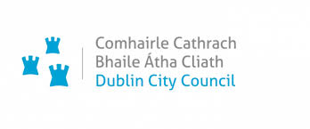

After completing this lesson, you'll be able to:
FME Flow Apps are web applications you create and customize in FME Flow with a no-code form. Flow Apps allow users to access and run FME functionality without needing FME experience. You can control who has access to your apps, customize them to match your organization's branding, and use parameters to give users control over the processing.
The core benefits of Flow Apps are:
You share Flow Apps with users through URLs. App users open the app in a web browser, fill out the form, and run the app. FME Flow processes the inputs, performs the data translation, and returns the results and data outputs to the app user.

Workspace Apps allow users to run a single FME workspace through the app interface. You can share Workspace Apps through URLs and configure them as publicly accessible or private to specific FME Flow users. You can configure parameters to allow end-users to upload source data files, control data processing, and set output settings. Workspace Apps may utilize any of FME Flow's transformation services to return downloadable datasets or stream the output data directly to the app user.
Check out Map-Based Data Distribution, a Workspace App embedded into a webpage. Scroll down to the Data Distribution Service, select some data, choose an area in Vancouver, set your outputs, and click Run. The app will present you with a URL to download the data, all processed by FME Flow behind the scenes.

Automation Apps allow FME Flow users to trigger a pre-built Automation to run through the app interface. Users may input source files and values from the app to control how the Automation runs. Automations may run multiple workspaces in sequence, or in parallel, and perform external actions to send messages and data to external applications or other workflows on FME Flow.

AR Apps enable users to run augmented-reality workspaces and stream AR data back to them. You should connect AR Apps to the FME Realize App to view your data in full augmented reality.

Gallery Apps are landing pages that link to other Flow Apps and external websites. You share a single Gallery App URL to allow users to open links to other Flow Apps or webpages. Like other Flow Apps, Gallery Apps are customizable to match your organization's branding and can be shared publicly.
Our FME Community frequently uses Gallery Apps. Check out our FME Community Balloon Contest App or our Peak of Data Integration 2022 FME Hackathon App.

Dublin City Council uses FME Flow Apps as a public self-serve portal for property repair needs. Before developing their Flow Apps, citizens would report repair needs by phone, and council staff would manually log service requests, allocating work to tradespeople via printed requests. The FME Flow App, which replaces this, allows forepersons to input maintenance requests, immediately process the data using FME workspaces, and update service requests, tenant details, and GPS directions, which tradespersons access through another Flow App. Dublin City Council saves 90 days annually, tradespeople save 400 hours weekly, and reduce human errors with their near-real-time, efficient Flow App solution.

Tesera Systems created an FME Flow App to analyze the risk of sewer backup to municipal infrastructure. They set up FME to process GIS data submitted to the app, perform data validation, and output model indicators for further analysis. Municipalities using the web app can take action to improve infrastructure in high-risk areas and identify areas that require flooding emergency plans, resulting in valuable risk mitigation and cost savings. Using FME Flow for this project, Tesera can automatically process vast volumes of data while keeping infrastructure costs low.

Ignis Technologies enhances firefighting intelligence using FME. As forest fires intensify globally and become more challenging to manage, firefighters are left scrambling to gather critical data from disparate sources under pressure. Ignis utilizes an FME Flow web app to seamlessly integrate data and ensure that it updates within a 30-second window. They use FME to consolidate 25 different datasets, ranging from live fire incidents to weather conditions, and import them into the app for firefighters to access on demand. FME has streamlined data accessibility, reduced operational costs, and expedited Ignis's market launch by three months.